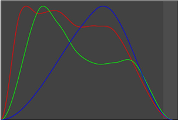

在默认设置中，F_ReGrain 在整个图像上添加相同数量的纹理。然而，图像上的纹理量通常是亮度的函数。在各种参数 谷物 响应 组允许您调整添加的颗粒量如何随亮度变化:
• 按 样品颗粒响应 将导致颗粒量与亮度的变化从 谷物 输入，并打开 使用采样响应 将这些曲线应用于添加到 Src 序列。
• 要查看采样响应曲线，请打开 绘制响应 ; 下图显示了一个例子。
• 添加到图像的灯光、中间色调和高光的颗粒量可以使用 低增益 , 中增益 和 高增益 参数。调整这些的效果也可以在响应曲线上看到。
|  |
|
这显示了谷物反应的一个例子
亮度。X 轴表示 亮度和 y 轴表示颗粒的数量。 |
|
|